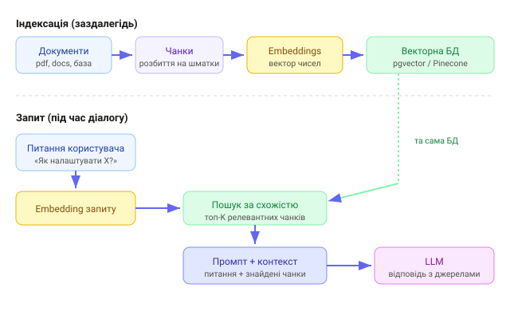

1. Проблема: модель не знає твоїх даних
LLM навчена на публічних текстах до певної дати. Вона не знає твоєї документації, бази знань чи вчорашніх тікетів — і якщо спитати, може вигадати (галюцинувати). Запхати всю базу в кожен промпт неможливо (контекстне вікно обмежене й дороге).
2. Що таке RAG
RAG (Retrieval-Augmented Generation) — «генерація, доповнена пошуком». Ідея проста: перед відповіддю знайти релевантні шматки твоїх даних і вкласти їх у промпт як контекст. Модель відповідає на основі саме цих фрагментів, а не памʼяті.
RAG різко зменшує галюцинації й дає свіжі, приватні знання без до-навчання моделі. Бонус — можна показати джерела («звідки це»), бо ти знаєш, які фрагменти вклав.
3. Embeddings — сенс у вигляді чисел
Щоб шукати «за змістом», а не за словами, текст перетворюють на embedding — вектор чисел, що кодує сенс. Тексти з близьким змістом дають близькі вектори, навіть якщо слова різні («авто» ↔ «машина»). Ембеддинг рахує окрема модель:
// приклад: отримати embedding тексту (через Vercel AI SDK)
import { embed } from 'ai';
import { openai } from '@ai-sdk/openai';
const { embedding } = await embed({
model: openai.embedding('text-embedding-3-small'),
value: 'Як налаштувати двофакторну автентифікацію?',
});
// embedding — масив чисел, напр. довжиною 1536Близькість двох векторів міряють косинусною подібністю: що ближче до 1 — то схожіший сенс. Саме за нею векторна БД знаходить релевантні фрагменти.
4. Конвеєр RAG
Дві фази: індексація (заздалегідь) і запит (під час діалогу).

- Chunking — розбити документи на шматки (напр. по кілька абзаців);
- Embed — порахувати embedding кожного чанка;
- Store — зберегти вектори + текст у векторну БД;
- Retrieve — embedding запиту → знайти топ-K найближчих чанків;
- Generate — вкласти чанки в промпт і попросити модель відповісти.
5. Складання промпту
Знайдені фрагменти передають моделі як контекст із чіткою інструкцією — відповідати лише за ними:
const context = topChunks.map((c) => c.text).join('\n---\n');
const res = await client.messages.create({
model: 'claude-opus-4-8',
max_tokens: 1024,
system:
'Відповідай ЛИШЕ на основі наведеного контексту. ' +
'Якщо відповіді немає в контексті — так і скажи.',
messages: [
{ role: 'user', content: `Контекст:\n${context}\n\nПитання: ${question}` },
],
});Інструкція «відповідай лише за контекстом, інакше скажи що не знаєш» — ключова: вона й тримає модель у межах твоїх даних, і чесно зізнається, коли відповіді немає.
6. Практичні нюанси
- Розмір чанка — замалі втрачають контекст, завеликі розмивають пошук; типово кілька сотень токенів із невеликим перекриттям;
- K — скільки фрагментів брати (3–8): більше контексту, але дорожче й шумніше;
- оцінка якості — перевіряй на реальних питаннях; поганий retrieval → погана відповідь, хоч би яка модель;
- джерела — зберігай метадані чанка (документ, розділ), щоб показати посилання.
Де саме зберігати вектори й як шукати — у наступному уроці про векторні БД.